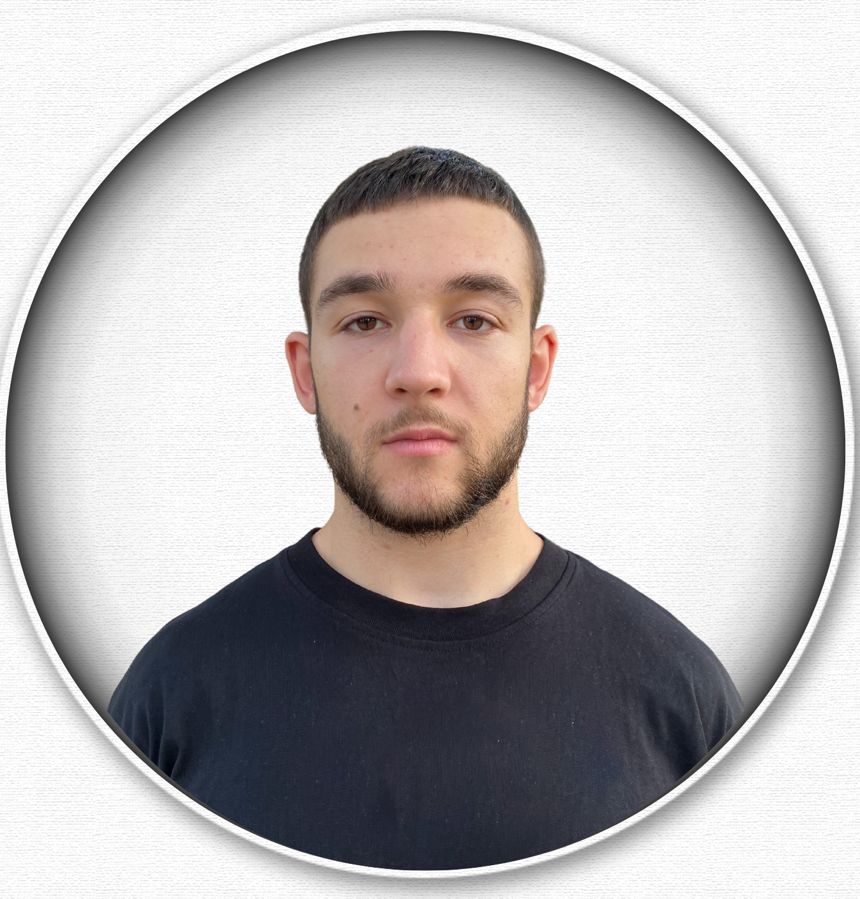
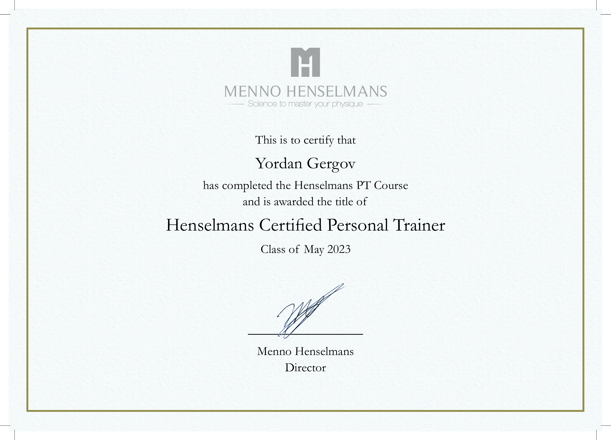

Yordan Gergov

Summary
Ambitious and goal-oriented, I'm passionate about self-improvement and growth, always eager to learn, love
spending time coding and reading books, with a keen interest in natural bodybuilding as a hobby.
Education
- Bachelor of Finance - Sts. Cyril and Methodius University of Veliko Tarnovo
Work Experience
- Online coaching and fitness mentor
- Training and managing a nutrition and training plan
- Monitor brand consistency across marketing channels and materials.
- Digital daily communication with customers
- Detailed customer training on current scientifically proven methods
- Marketing strategy for brand expansion
- Sales experience
- Period: June 2022 - present
- Customer Consultant - Unicredit Bulbank
- Advising customers on their products at the bank
- Offering and selling the service packages offered by the banking institution
- Consumer and mortgage lending to customers
- Cash customer service
- Period: may 2023 - october 2023
Skills
- Self-discipline and motivation
- Rapid adoption of newtechnologies
- Analytical thinking andproblem solving
- Time Management
- Critical Thinking
Certification
- Menno Henselmans Personal Trainer Certificate

Languages
- English (B2)
- Bulgarian (Native)
Contact Me